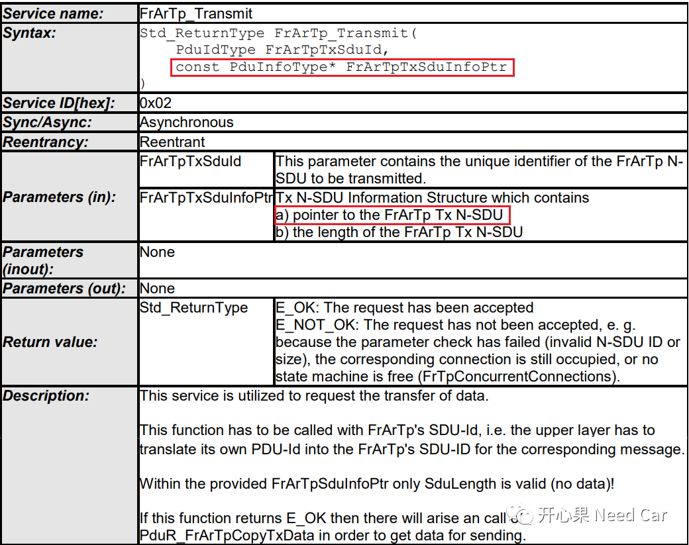
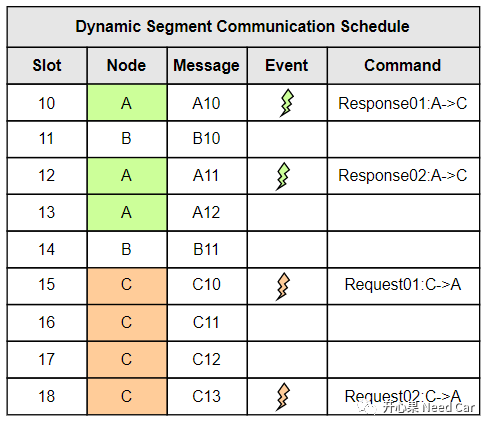
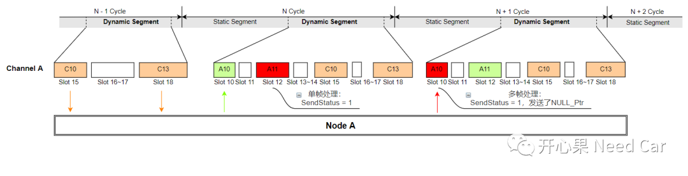
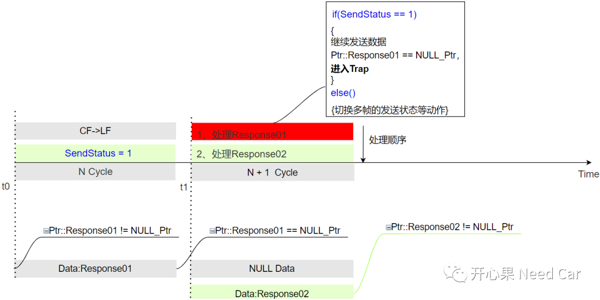
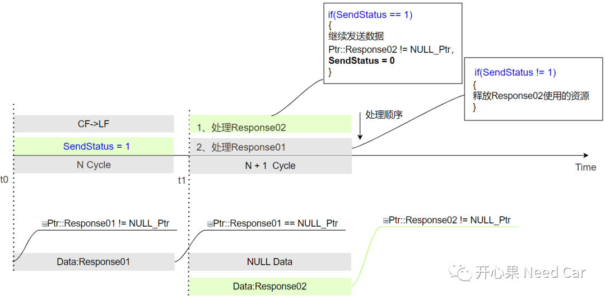
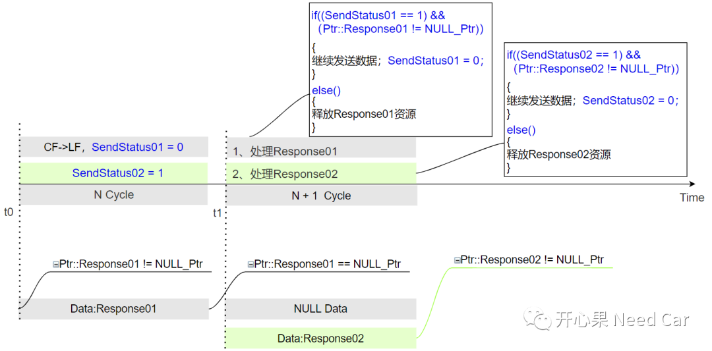

实际项目开发中，指针引起的问题相当普遍，野指针、空指针、数组越界等引发的Trap问题比较普遍，本文就工程中遇到的一个Trap问题展开讨论，希望能拓宽大家解决问题的思路。
问题现象：Flexray的诊断过程中，多帧传输时，调用FrArTp_Transmit()接口，程序偶发进入Trap。
FrArTp_Transmit()函数原型如下所示：
看到FrArTp_Transmit()函数原型，又看到了参数中存在指针(*)，我们自然而然地会想到指针出问题了，顺着这个思路继续排查，指针异常一般会分为两种情况：指针为空（NULL）、野指针。- 空指针问题：一般是因为程序中没有对指针进行判空，又使用了空指针造成程序异常；
- 野指针问题：程序使用该指针时（野指针指向地址不确定），该指针指向了一个非法地址，比如：
- 访问地址空间根本不存在，即：手册中注明Reserved的地址空间，如下所示：
其实，野指针和空指针根据Trap的Class和Class对应的TIN(Trap Identification Number)很好判断，但是造成空指针和野指针的条件如何产生，往往需要动动脑筋。
分析一下本文的问题，本文提到的Flexray总线中，每个Cycle包含Static Communication Segment、Dynamic Communication Segment、NIT(Network Idle Time，网络空闲段），如下所示：
对于诊断报文，属于事件型报文，收/发放在Dynamic Communication Segment中，Flexray的通信机制由调度表决定，因此我们需要分析动态段的调度，假设动态段的调度表如下所示：

节点A诊断指令的收/发行为如下所示，假设N - 1 Cycle之前的周期中接收到请求Request01（比如：N-2 Cycle），而在N - 1 Cycle中的Slot18接收到请求Request02，之后Node A在N Cycle中的Slot10响应完Request01的请求（Response01需要多帧完成其数据传输）,即：LF发送完成。同时，在NCycle的Slot12时刻，响应Request02的请求（Response02），此时只是做了一个发送状态的置位，即:SendStatus = 1，实际需要下一个Cycle发送数据（别问为什么这样处理）。

Node A的每个Channel，响应诊断请求会调用FrArTp_Transmit()，数据发送完成以后，同时将FrArTpTxSduInfoPtr指针释放为空指针(NULL_Ptr)，而资源的完全释放需要下一个Cycle。Response01响应时，需要多帧Flexray报文完成响应数据的发送，而问题代码中，每次数据发送以后会用一个全局变量记录发送状态信息（eg:SendStatus = 1，表示有数据需要发送），N Cycle内，多帧数据处理完成，但是资源还没有释放，比如FrTp的状态还没有切换到Idel等，这些动作需要下一个Cycle（本例：N + 1 Cycle）才能完成。在N Cycle中，响应Response02时，将SendStatus置位， 即：SendStatus= 1，但是并没有立即响应数据，而是要在N + 1 Cycle中发送Response02的响应数据。在N + 1 Cycle中，如果此时先处理Response01，本来想释放多帧使用的资源，但是程序识别到SendStatus= 1，就继续发送数据，由于此时Ptr::Response01指针在N Cycle中已经释放为NULL_Ptr，此时再调用FrArTp_Transmit()发送数据，就会因为空指针而进入Trap。
在N + 1 Cycle中，如果此时先处理Response02，因为Response02一帧即可发送完成，会将SendStatus复位，即：SendStatus= 0。之后的Response01处理，即可正常地完成Response02资源的释放，避免程序进入Trap，这也就是问题偶发的原因。如下所示：

上述问题原因找到了，怎么解决呢？既然是由于Response01使用Response02资源（全局变量SendStatus）造成程序异常，那么我们就需要考虑如何避免资源的异常访问，保证数据操作的一致性。
第一：Response01和Response02使用不同变量维护各自的运行状态，即：Response01使用SendStatus01维护其发送状态，Response02使用SendStatus02维护其发送状态，上述细节描述如下所示：
第二：涉及指针操作时，一定要对指针进行判空操作，避免空指针的使用。